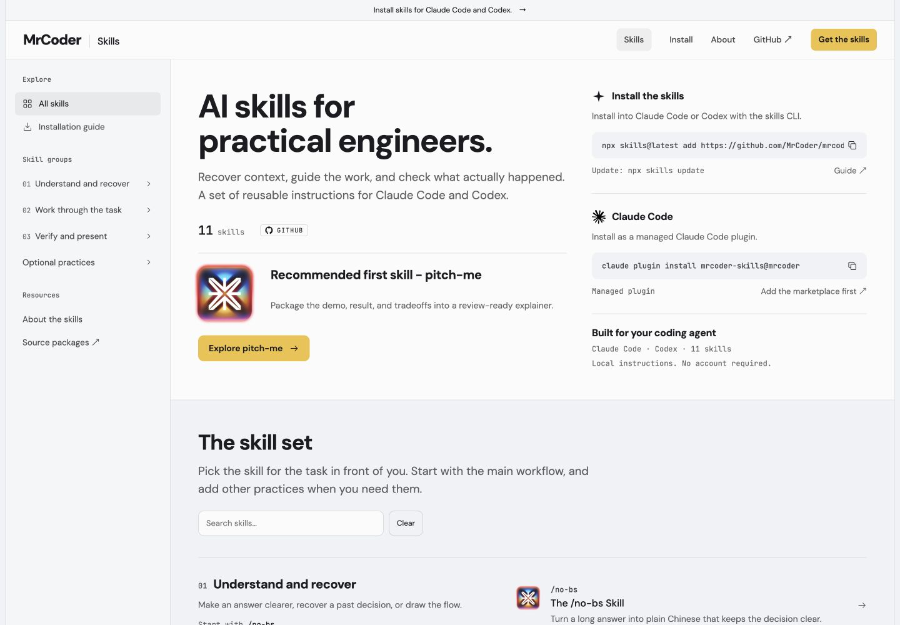

官方 skills CLI
命令会让使用者选择要安装的 skill 和 agent。安装完成后，用 CLI 管理更新。
npx skills@latest add https://github.com/MrCoder/mrcoder.github.io/tree/master
npx skills updateRelease review · 2026-10-05
MrCoder Skills 是一套面向 Claude Code 与 Codex 的 Astro 静态站点，沿用真实 AI Hero UI 的结构与视觉语言，提供可复用的 agent instructions 和稳定的安装入口。
01 / Scope
以下信息对应当前源码、安装生成器和 Pages workflow 的实现。
| 产品形态 | Astro 静态站点；UI 忠实适配 AI Hero 的实际源码来源，站点继续使用 mrcoder.github.io。 |
|---|---|
| 内容范围 | 11 个自有 skill，加上指向 no-bs 的 renhua 别名；别名不计作第 12 个独立 skill。 |
| 首选入口 | pitch-me：将 demo、结果和取舍打包成适合评审的说明。 |
| 保存边界 | 原有 66 个 published raw、download、asset 文件均保留；本次变更集中在 docs 与设计层。 |
| 分支约束 | 安装命令固定指向 master；这是因为仓库默认分支仍是 gh-pages，两者职责保持分开。 |
02 / Install
官方 skills CLI 负责交互式选择 agent 与 skill；Claude Code 通过自有 marketplace 使用插件。
命令会让使用者选择要安装的 skill 和 agent。安装完成后，用 CLI 管理更新。
npx skills@latest add https://github.com/MrCoder/mrcoder.github.io/tree/master
npx skills update先注册本仓库的 marketplace，再安装名为 mrcoder-skills 的插件。
claude plugin marketplace add 'https://github.com/MrCoder/mrcoder.github.io.git#master'
claude plugin install mrcoder-skills@mrcoder推荐起点：pitch-me。 先用它把成果整理成可评审的解释，再按任务需要选择其他 skill。
03 / Publish
发布完成后，访问地址不变；只切换 GitHub Pages 的构建来源。
| Pages 目标 | 保留 mrcoder.github.io，将 Pages 来源从 legacy master / root 切换到 GitHub Actions。 |
|---|---|
| Workflow | .github/workflows/pages.yml 监听并发布 master；默认分支 gh-pages 保持不变。 |
| 回滚提交 | 218a367f50fb0df0b01be04d2b2f7fdba33fe042 |
| 回滚设置 | 恢复发布前的 Pages legacy 来源：master 分支、仓库根目录 /。 |
发布授权人是用户，用户已授权实际发布；仍需等待 merge-quiz 完成，或由用户明确说明跳过。
预发布提交与原 Pages 设置已记录，出现问题时可回到上面的提交和 legacy 来源。

04 / Preview
画面把安装命令、更新命令、Claude Code 插件和 11 个 skill 的定位放在同一条阅读路径上，首次访问者无需先理解仓库结构。
05 / Release check
用于确认安装路径与本次发布说明一致。